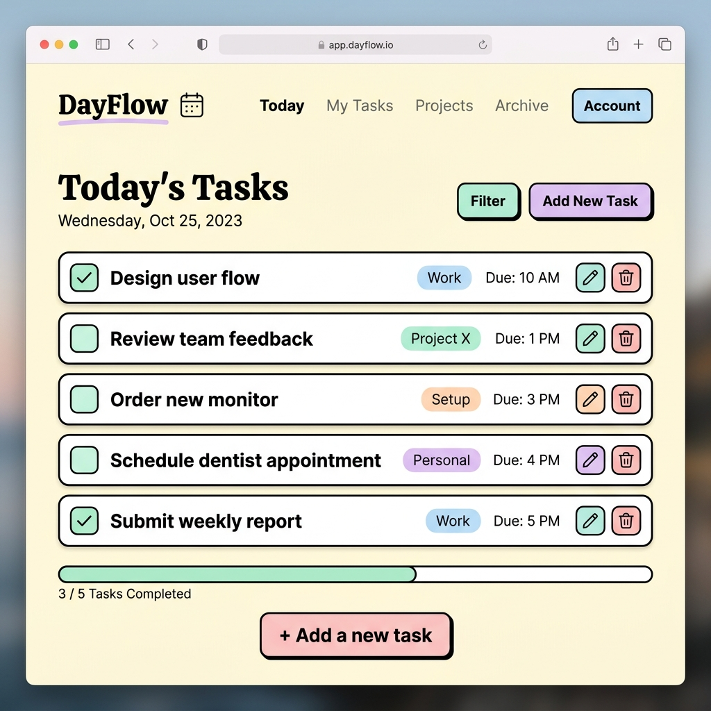
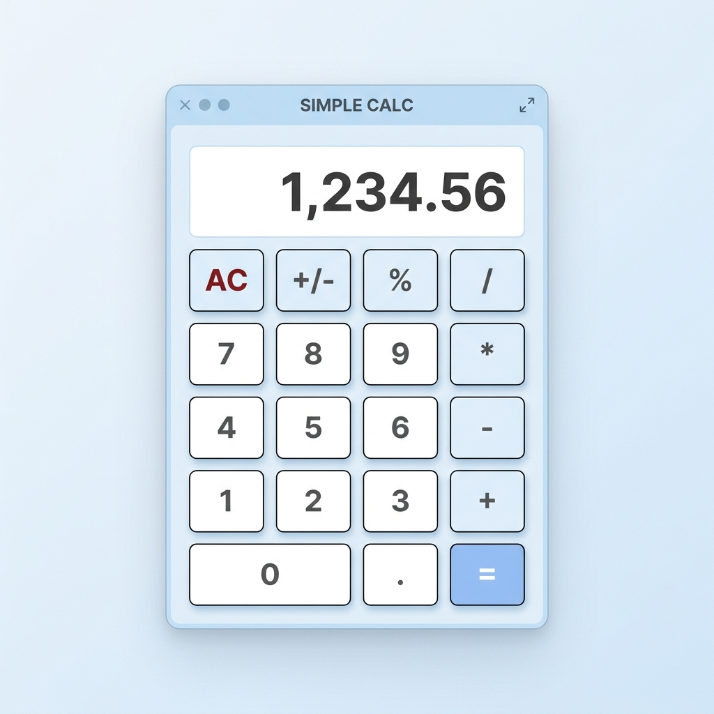
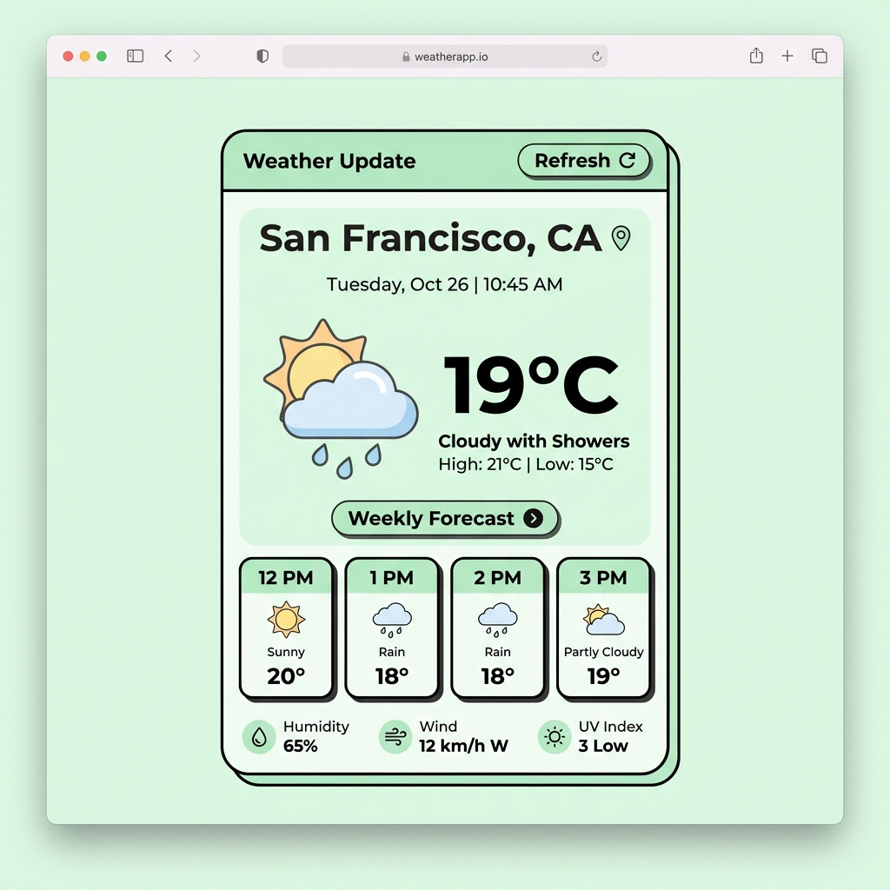

Portfolio Saya
Beberapa proyek yang pernah saya kerjakan selama belajar web development dan programming.
Proyek
Proyek-proyek ini saya buat untuk belajar dan mengasah skill coding.

To-Do List App
Aplikasi catatan tugas sederhana yang bisa menambah, menghapus, dan menandai tugas selesai.

Kalkulator Sederhana
Kalkulator web dengan operasi dasar: tambah, kurang, kali, dan bagi. Desain minimalis.

Weather App
Aplikasi yang menampilkan informasi cuaca berdasarkan kota menggunakan API sederhana.
Pengalaman
Pengalaman organisasi dan kegiatan yang pernah saya ikuti.
Anggota Divisi IT
Himpunan Mahasiswa Informatika
Membantu mengelola website dan media sosial himpunan. Belajar banyak tentang kerja tim dan manajemen proyek.
Peserta Hackathon
Hackathon Kampus 2024
Ikut kompetisi hackathon pertama kali. Bikin aplikasi web sederhana bersama tim dalam waktu 24 jam.
Volunteer IT Support
Acara Seminar Teknologi Kampus
Membantu teknis acara seminar, mulai dari setup perangkat sampai troubleshooting selama acara berlangsung.